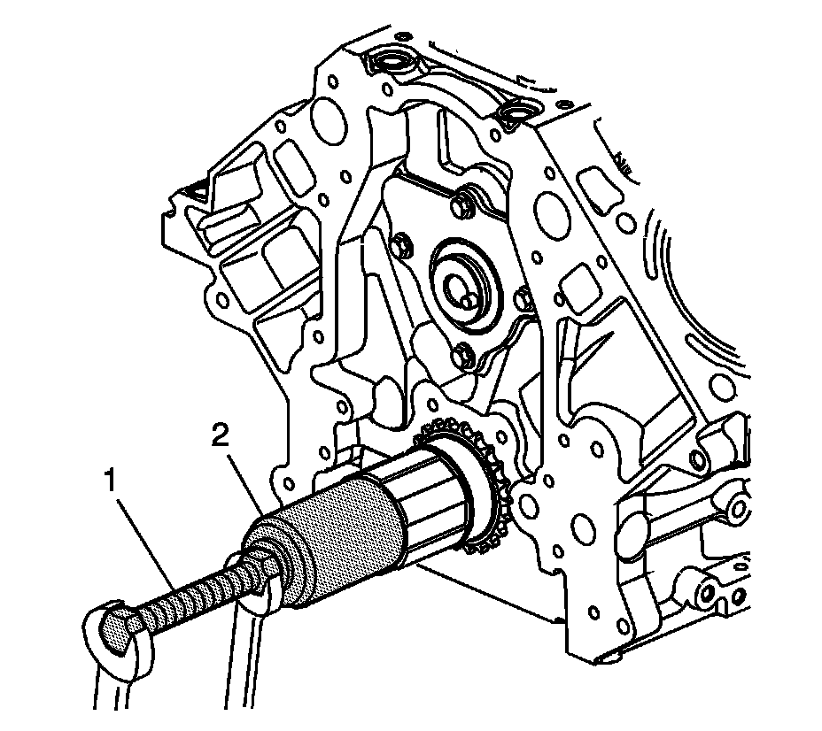

Crankshaft Gear/Sprocket: Specifications

3. Install the crankshaft sprocket (207) onto the front of the crankshaft. Align the crankshaft key with the crankshaft sprocket keyway.

4. Use the J 41478 (1) and the J 41665 (2) in order to install the crankshaft sprocket. Install the sprocket onto the crankshaft until fully seated against the crankshaft flange.
5. Rotate the crankshaft sprocket until the sprocket alignment mark is in the 12 o'clock position.